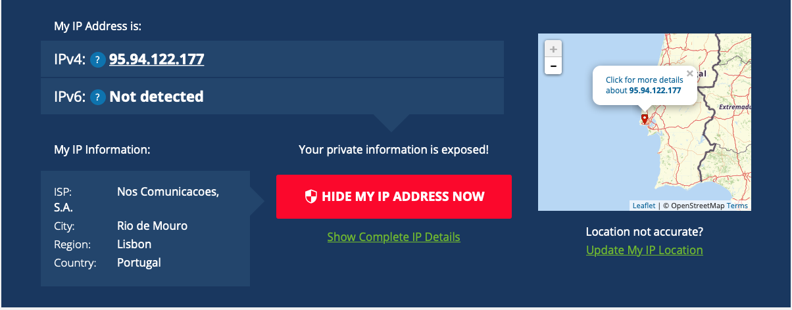
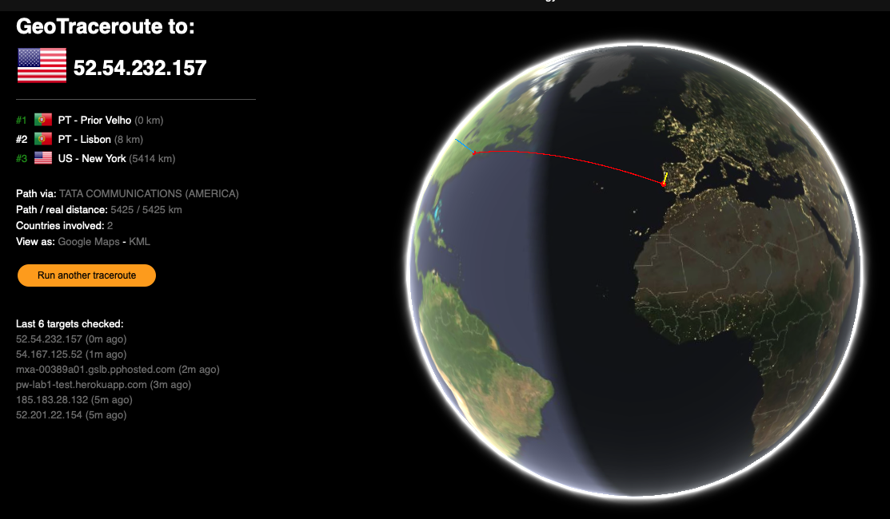

Com base na observação da primeira página da aulas anterior, obti infomação sobre IP do meu PC e do meu telemóvel acessei este link
Endereços IP
1. Obtenha informação sobre o IP do seu PC e seu telemóvel. obtenha e anote o endereço IP do seu computador. Pode obter isso de várias formas. A mais simples é perguntar no Google "what is my ip". Anote onde está localizado, usando por exemplo a ferramenta https://whatismyipaddress.com/ip-lookup. guarde uma imagem do mapa que localiza. Obtenha e anote a mesma informação do seu telemóvel, se tiver dados móveis.
2. Obtenha informação sobre o IP do servidor Heroku onde está a sua app. Obtenha e anote o endereço IP do servidor Web onde está alojada a sua página no Heroku anote onde este está localizado, usando a ferramenta https://whatismyipaddress.com/ip-lookup. Guarde uma imagem do mapa que a localiza.
Percurso
1. A forma mais clássica é através da linha de comando e escreva tracert e especifique o endereço IP obtido anteriormente: > traceroute
2. Use a ferramenta GeoTraceroute, Em https://geotraceroute.com/, para visualizar graficamente por onde passam os pacotes IP, até chegar ao seu servidor Heroku. Escolha como origem (source) Portugal, e como destino o URL do seu site. Registe os saltos, indicando o país, e distância de cada salto. Quando fizer a página, pode procurar na Internet e inserir uma pequena image da bandeira do país. Com a ferramenta de Snip (Tecla Windows + Shift + S) copie a imagem do globo que cubra os saltos dados, e guarde-a como um ficheiro jpg ou png, para inserir também na página report.html.
